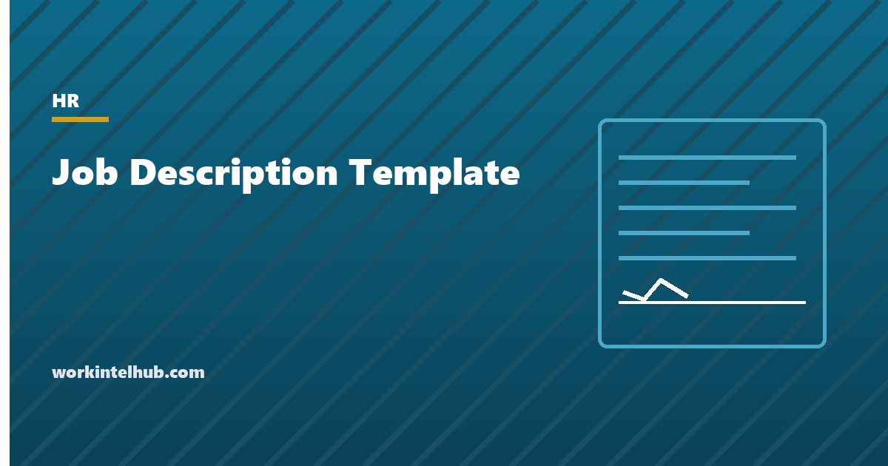

Job Description Template

A job description does three jobs at once. It tells candidates what the work is. It sets the standard a manager will hold the employee to. And, when an employee asks for an accommodation or a fitness-for-duty question comes up, it is the document the Equal Employment Opportunity Commission and the courts look at to decide which duties were essential. Most job descriptions are written for the first job only, in the week the posting goes up, and are then never read again until the third one is needed.
The builder below produces a description structured for all three uses: purpose, numbered essential functions, marginal duties kept separate, required and preferred qualifications, physical demands, pay range and an equal opportunity statement. The rest of the page covers why each part is there and where descriptions go wrong.
Job description builder
Nothing typed here leaves your browser. The output separates essential from marginal functions and states the physical demands, which is what makes the document useful when an accommodation request or a fitness-for-duty question arrives later.
Essential functions and why they are numbered
Under the Americans with Disabilities Act, an employer must accommodate a qualified person who can perform the essential functions of the job, with or without accommodation. It does not have to remove an essential function. It does have to consider reassigning marginal ones. The whole accommodation analysis therefore turns on which duties are which, and the EEOC says it will look at the job description written before the job was advertised as evidence. A description that lists twenty duties with no distinction has thrown that evidence away.
The EEOC's own tests for whether a function is essential are worth applying to each line: the position exists to perform it; few other employees are available to take it on; or it is so specialised that the person was hired for that expertise. The share of time spent on it, the consequence of not performing it, and what past incumbents actually did all count. Writing the share of time in brackets after each function, as the builder suggests, makes the case on the face of the document.
Two habits undermine the list. The first is "other duties as assigned" placed among the essential functions, which the Job Accommodation Network advises against because it makes everything and nothing essential. Put it in a closing sentence about the description not being exhaustive. The second is describing a method rather than an outcome: "drives a forklift" is a method, "moves pallets between receiving and the racks" is the function, and the difference is whether an employee who cannot drive but can operate a pallet jack is performing the job.
Qualifications that screen for the job, not the person
Required qualifications are the ones without which the person cannot do the essential functions on day one or within a short training period. Preferred qualifications are everything else. The distinction matters for two reasons. Candidates, particularly women and candidates from under-represented groups, tend not to apply unless they meet all the requirements listed, so an inflated list narrows the pool. And a requirement that screens out a protected group without being necessary to the job is the definition of disparate impact.
The usual offenders are degree requirements for roles where experience does the same work, years-of-experience thresholds picked because they sounded right, "native English speaker" (national origin), "recent graduate" or "digital native" (age), and physical requirements copied from a different role. Write each requirement as the thing it is a proxy for. "Bachelor's degree" is usually a proxy for "can write a clear analysis"; say that, and let the degree be one way to show it.
Where a licence or certification is genuinely required by law or by a client contract, say so and name it. Where a physical standard is required, state the standard, not an age or a fitness level: "lift 50 pounds from floor to waist", not "physically fit".
Pay range, classification and the posting
A growing list of states requires the pay range in the posting: California, Colorado, Hawaii, Illinois, Maryland, Massachusetts, Minnesota, New Jersey, New York, Vermont, Washington and the District of Columbia already do, with Maine and Virginia added in July 2026 and Delaware following in 2027. Thresholds range from one employee to fifty. Our pay transparency lookup gives the rule for each. Even where the law does not require it, a range in the posting screens out candidates the budget cannot reach and reduces the offers declined over pay.
The range should be the one the employer expects to pay, in good faith, for this role at hire. A range of $40,000 to $140,000 satisfies nothing. Several states now define the range by reference to the pay scale, the actual pay of people in equivalent roles or the budgeted amount, and enforce against ranges set to evade the law.
The classification line, exempt or non-exempt, is decided by the duties and the salary, not by the title or by preference. The description is where the duties are recorded, so it is also where a misclassification case starts. If the essential functions describe routine work under close supervision, an exempt label on the same page is a problem. The exempt versus non-exempt entry sets out the salary and duties tests.
Physical demands and work environment
This section is the one most often left out of office job descriptions and most often needed. It states what the body has to do: sit or stand at a workstation for extended periods, use a screen for most of the day, lift and carry, climb, drive, work outdoors, work at height, work around noise or chemicals. It also states the schedule and travel.
It matters in three situations. When an applicant asks whether they can do the job with their condition, it is the honest answer. When an employee returns from injury with restrictions, it is what the doctor compares the restrictions against. And when an accommodation is requested, it is the baseline the interactive process starts from. Our reasonable accommodation page covers that process; it works far better when the description already says what the job physically involves.
Write the demand, not the disability. "Must be able to hear" excludes people who could do the job with a captioned phone; "communicates with customers by phone and chat" describes the function and leaves the method open.
Keeping the description current
- Review it at every hire and at every annual review. Jobs drift; a description three years old usually describes a job nobody does.
- Have the incumbent read it. The person doing the job knows which functions consume the week. Their sign-off is also the acknowledgment the builder adds at the end.
- Date it. An undated description cannot show it was written before the accommodation request, which is the point at which it carries the most weight.
- Keep the version used for each hire with the posting and the offer letter. It is the record that the pay range and the qualifications were set before the candidates were seen.
- Use it in performance conversations. A performance improvement plan that cites functions from the description is on firmer ground than one that cites expectations nobody wrote down. The same goes for the write-up that may precede it.
- Match the posting to the description. A posting that promises a different job than the description sets up a mismatch that surfaces in the first month, and in the exit interview.
Key takeaways
- A job description serves the posting, the performance standard and the ADA analysis. Write it for all three at once.
- Number the essential functions, show the share of time, and keep marginal duties in a separate list. That separation is what the EEOC looks for.
- Describe outcomes, not methods, so that an employee who does the job a different way is still doing the job.
- Required qualifications are those without which the essential functions cannot be done. Everything else is preferred. Inflated lists shrink the pool and invite disparate impact claims.
- State the physical demands, schedule and travel in plain terms. Office roles need this section as much as warehouse roles.
- Include the pay range where state law requires it, and date every version and keep the one used for each hire.
Frequently asked questions
What should a job description include?
Title, department, reporting line, location and arrangement, classification, schedule, pay range where required, a purpose statement, numbered essential functions, marginal duties kept separate, required and preferred qualifications, physical demands and work environment, an equal opportunity statement, and a dated closing line saying the description is not exhaustive and not a contract.
What is an essential function under the ADA?
A fundamental duty of the position, as opposed to a marginal one. The EEOC considers whether the position exists to perform the function, how many other employees could perform it, and whether it requires specialised expertise, along with the time spent on it and the consequence of not performing it. A written description prepared before advertising the job is evidence of what the employer considers essential.
Should a job description include a salary range?
In an increasing number of states it must appear in the posting: California, Colorado, Hawaii, Illinois, Maryland, Massachusetts, Minnesota, New Jersey, New York, Vermont, Washington, the District of Columbia, and from July 2026 Maine and Virginia, with varying employee thresholds. Elsewhere it is optional but reduces wasted interviews and declined offers.
Is it legal to put 'other duties as assigned' in a job description?
Yes, but not as an essential function. Listing it among the essential functions makes the list meaningless for ADA purposes. Put it in a closing sentence stating that the description is not exhaustive and that duties may change with reasonable notice.
How often should job descriptions be updated?
At every hire for the role and at every annual review, with the incumbent reading and acknowledging it. Date each version and keep the version used for each hire alongside the posting and offer letter.
Can a job description create a contract?
It can be argued to, if it promises terms. Add a sentence stating that it does not create a contract of employment and that the employment relationship remains at will, and keep pay, benefits and tenure promises out of it.